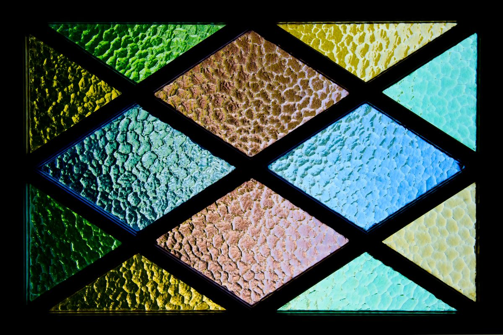

About the studio
One bench, one pair of hands
Prismatic Light is Wren Castellano, a stained glass artist and restorer working from a former trolley barn in Pittsburgh. There is no production line and no subcontracted bench: the person who visits your building is the person who cuts your glass.
Studio & workshop — Pittsburgh, Pennsylvania · Commissions open · Booking into spring
How the bench was learned
I came to glass at nineteen, as an apprentice in a Pittsburgh restoration shop that spent its winters taking down church windows and its summers putting them back. The apprenticeship was the old kind: two years of cutting other people's lines and cleaning other people's glass before I was allowed to paint a face.
After that came journeyman years on releading crews across Pennsylvania and Ohio — mostly nineteenth-century church glass, some of it by famous studios, all of it teaching the same lesson: the glass is almost never the problem. The lead is. Prismatic Light opened in 2013 to do both halves of the trade from one bench: new windows built to last a century, and old windows given their second one.
The studio is a member of the Stained Glass Association of America and works to its restoration standards: document before you dismantle, keep every piece of original glass that can be kept, and make every repair reversible or recorded. New work is drawn by hand at full size. If a design wants a computer, it is usually the wrong design for glass.
What the studio does not do: production runs, catalogue panels, and "stained glass effect" film or plastic. If your window needs a glazier rather than a glass artist, the assessment will say so, and say who to call instead.
At the bench: a cut piece checked against the cutline before it joins the panel. Photograph: Antoni Shkraba, via Pexels.

Textured cathedral glass from the studio shelf — the surface is rolled into the sheet, not applied to it. Photograph: Tim Mossholder, via Pexels.
Materials & techniques
What a panel is made of
Nine materials account for nearly everything this studio makes or repairs. Knowing them is most of knowing the craft.
| Material | What it is | What it is for |
|---|---|---|
| Mouth-blown antique glass | Cylinder glass, blown and flattened by hand; full of seeds, bubbles and striations. | Colour-critical work and restoration matches — its unevenness is why old glass moves in the light. |
| Cathedral glass | Machine-rolled sheet, one colour all the way through, with the texture rolled into one face. | Even fields of colour: borders, backgrounds, patterned glazing. |
| Opalescent glass | Colour stirred with opaque white glass, so the sheet glows rather than transmits. | Privacy glass and skies — light comes through, sight does not. |
| Flashed glass | A thin skin of colour over a clear sheet, gathered in the blowing. | Two tones in one piece: the flash can be etched or sandblasted away in a pattern. |
| Vitreous paint | Ground glass and metal oxides in a gum medium, painted on and kiln-fired at about 1,150°F. | Faces, lettering, shading — firing fuses it to the surface permanently; unfired paint is a forgery's tell. |
| Silver stain | A silver compound painted on the back of the glass and fired, staining the glass itself. | Yellows and ambers on clear glass — halos, hair, heraldry. The original "stain" in stained glass. |
| Lead came | Extruded lead strip: H-profile between pieces, U-profile around edges. | The drawing and the structure in one — it carries the design and holds the panel up. |
| Solder | 60/40 tin-lead alloy, applied to every came joint on both faces. | Turns hundreds of pieces and strips into one rigid sheet. |
| Cement | Linseed oil, whiting and lampblack, brushed under the lead flanges and scrubbed off as it sets. | Weatherproofing and stiffness — a cemented panel rings; an uncemented one rattles toward its grave. |
Aftercare
Looking after stained glass
Good glass asks very little. Most damage this studio repairs was done by kindness — the wrong cleaner, the sealed-in storm window, the decade of ignored rattling.
Cleaning
Dust with a soft brush; wash, when you must, with distilled water and a drop of pH-neutral soap on a soft cloth. Never use ammonia or vinegar sprays on painted glass — they attack the paint layer and creep under the lead. Never pressure-wash, and never let a window cleaner treat it like a window.
Condensation
Water on the room side is room air condensing, not the window leaking — warm moist air meeting cold glass. Wipe the sill, keep the room's humidity sane, and make sure any protective glazing is vented: sealed protective glazing traps moisture against the panel and corrodes the lead it was meant to protect. Check the vents once a year.
When releading is due
Lead works for roughly seventy-five to a hundred years, then it is done. The signs: the panel bows or bulges, it rattles in its frame, cement crumbles out like biscuit, daylight shows at the edges, or water gets in. Book an assessment when you see two of those — a panel that keeps moving will start cracking the glass it holds, and glass is the part that cannot be remade.
Not sure whether your window needs a cleaner, a glazier, or a restorer?
Send a photograph. The assessment exists precisely to answer that question in writing — including when the honest answer is "not this studio".
Ask for an assessment or write directly: hello@prismaticlight.studio